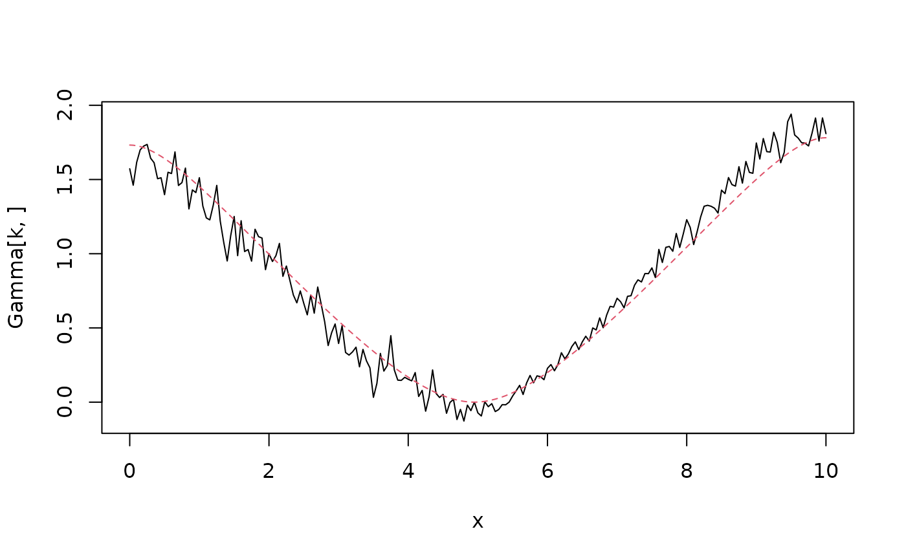

Covariance-based approximations of intrinsic fields
Source:R/intrinsic.R
intrinsic.matern.operators.Rdintrinsic.matern.operators is used for computing a
covariance-based rational SPDE approximation of intrinsic
fields on \(R^d\) defined through the SPDE
$$(-\Delta)^{\beta/2}(\kappa^2-\Delta)^{\alpha/2} (\tau u) = \mathcal{W}$$
Usage
intrinsic.matern.operators(
kappa,
tau,
alpha,
beta = 1,
G = NULL,
C = NULL,
d = NULL,
mesh = NULL,
graph = NULL,
loc_mesh = NULL,
m_alpha = 2,
m_beta = 2,
compute_higher_order = FALSE,
return_block_list = FALSE,
type_rational_approximation = c("chebfun", "brasil", "chebfunLB"),
fem_mesh_matrices = NULL,
scaling = NULL
)Arguments
- kappa
range parameter
- tau
precision parameter
- alpha
Smoothness parameter
- beta
Smoothness parameter
- G
The stiffness matrix of a finite element discretization of the domain of interest.
- C
The mass matrix of a finite element discretization of the domain of interest.
- d
The dimension of the domain.
- mesh
An inla mesh.
- graph
An optional
metric_graphobject. Replacesd,CandG.- loc_mesh
locations for the mesh for
d=1.- m_alpha
The order of the rational approximation for the Matérn part, which needs to be a positive integer. The default value is 2.
- m_beta
The order of the rational approximation for the intrinsic part, which needs to be a positive integer. The default value is 2.
- compute_higher_order
Logical. Should the higher order finite element matrices be computed?
- return_block_list
Logical. For
type = "covariance", should the block parts of the precision matrix be returned separately as a list?- type_rational_approximation
Which type of rational approximation should be used? The current types are "chebfun", "brasil" or "chebfunLB".
- fem_mesh_matrices
A list containing FEM-related matrices. The list should contain elements c0, g1, g2, g3, etc.
- scaling
second lowest eigenvalue of g1
Value
intrinsic.matern.operators returns an object of
class "intrinsicCBrSPDEobj". This object is a list containing the
following quantities:
- C
The mass lumped mass matrix.
- Ci
The inverse of
C.- GCi
The stiffness matrix G times
Ci- Gk
The stiffness matrix G along with the higher-order FEM-related matrices G2, G3, etc.
- fem_mesh_matrices
A list containing the mass lumped mass matrix, the stiffness matrix and the higher-order FEM-related matrices.
- m_alpha
The order of the rational approximation for the Matérn part.
- m_beta
The order of the rational approximation for the intrinsic part.
- alpha
The fractional power of the Matérn part of the operator.
- beta
The fractional power of the intrinsic part of the operator.
- type
String indicating the type of approximation.
- d
The dimension of the domain.
- A
Matrix that sums the components in the approximation to the mesh nodes.
- kappa
Range parameter of the covariance function
- tau
Scale parameter of the covariance function.
- type
String indicating the type of approximation.
Details
The covariance operator $$\tau^{-2}(-\Delta)^{\beta}(\kappa^2-\Delta)^{\alpha}$$ is approximated based on rational approximations of the two fractional components. The Laplacians are equipped with homogeneous Neumann boundary conditions and a zero-mean constraint is additionally imposed to obtained a non-intrinsic model.
Examples
if (requireNamespace("RSpectra", quietly = TRUE)) {
x <- seq(from = 0, to = 10, length.out = 201)
beta <- 1
alpha <- 1
kappa <- 1
op <- intrinsic.matern.operators(
kappa = kappa, tau = 1, alpha = alpha,
beta = beta, loc_mesh = x, d = 1
)
# Compute and plot the variogram of the model
Sigma <- op$A %*% solve(op$Q, t(op$A))
One <- rep(1, times = ncol(Sigma))
D <- diag(Sigma)
Gamma <- 0.5 * (One %*% t(D) + D %*% t(One) - 2 * Sigma)
k <- 100
plot(x, Gamma[k, ], type = "l")
lines(x,
variogram.intrinsic.spde(x[k], x, kappa, alpha, beta, L = 10, d = 1),
col = 2, lty = 2
)
}
